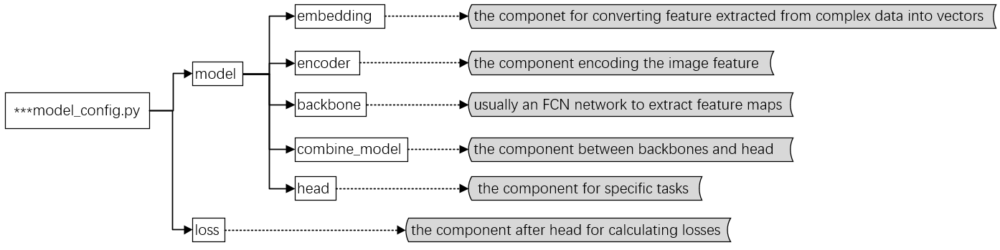

Tutorial 3: Customize Models
In MIX-Kalman, we support two kinds of model structure: BERT-Base style model and others. And there are two chooses when you customize model:
use the source code model;
use MIX-Kalman model sturcture.
Customize model in source code
Use LXMERT (BERT-Base style model) model as an example in the following content. You should customize one necessary file MIX-Kalman/models/vqa_models/lxmert/lxmert_task.py
There are some key point you should do before using the model of source code:
import the
VQA_MODELSregister and BaseModel;decorate the LXMERT class by
@VQA_MODELS.register_module()to register it;the class
LXMERTshould inherit from the parent classBaseModel;
from mixk.models.builder import VQA_MODELS # import the VQA_MODELS register
from mixk.models.vqa_models.base_model import BaseModel # import BaseModel
# inherit from the parent class and register the model
@VQA_MODELS.register_module()
class LXMERT(BaseModel):
def __init__(self, **kwargs):
super().__init__()
...
# writer the specific `forward_train` and `forward_test` according to your task
def forward_train(self, data, **kwargs):
pass
def forward_test(self, data, **kwargs):
pass
...
Customize model in MIX-Kalman style
In the following part of this tutorial, we introduce how to customize model of non BERT-Base style.
In MIX-Kalman, We basically categorize model components into 6 types: embedding, encoder, backbone, combine_model, head and loss, which are as the follows:

There are many options for each component, you could choose one or more from each component to build up a model according to your task.
| componet | option |
|---|---|
| embedding | 'WordEmbedding', 'TextEmbedding', ... |
| encoder | 'ImageFeatureEncoder', 'LCGNEncoder', ... |
| backbone | 'HGL_BACKBONE', 'TwoBranchEmbedding', 'R2C_BACKBONE', 'LCGN_BACKBONE', ... |
| combine_model | 'BranchCombineLayer', 'ModalCombineLayer',... |
| head | 'R2CHead', 'TripleLinearHead', 'LCGNClassiferHead', ... |
| loss | 'TripleLogitBinaryCrossEntropy', 'CrossEntropyLoss', 'OBJCrossEntropyLoss', ... |
Build up model
You can build up model by the components above. Next we will introduce how to build up model in detail, use MCAN model as an example in the following content.
Customize the model.py
There you should customize one necessary file mixk/models/vqa_models/mcan_mixk.py to build your model, the key point is as follows:
import the choosed components and BaseModel in the
mixk/models/vqa_models/mcan_mixk.py;the class
MCANshould inherit from the parent classBaseModeland register the model by decorator@VQA_MODELS.register_module();build instantiate object of the componet in the
__init__function;writer the specific
forward_trainandforward_testfunction according to your task.
# import the choosed components and BaseModel
from ..builder import VQA_MODELS, build_backbone, build_combine_layer, build_embedding, build_encoder, build_head
from .base_model import BaseModel
# inherit from the parent class and register the model
@VQA_MODELS.register_module()
class MCAN(BaseModel):
def __init__(self, embedding, encoder, backbone, combine_model, head):
super().__init__()
# build instantiate object of the componet
self.embedding_model = build_embedding(embedding)
self.encoder_model = build_encoder(encoder)
self.backbone = build_backbone(backbone)
self.combine_model = build_combine_layer(combine_model)
self.head = build_head(head)
# writer the specific `forward_train` and `forward_test` according to your task
def forward_train(self, data, **kwargs):
pass
def forward_test(self, data, **kwargs):
pass
...
Develop new components
If the existing component option can not meet your needs, you can add a new one for your task. Here we show how to develop new components with an example of MCAN.
The model file structure is as below:
MIX-Kalman
├── configs
├── mixk
│ ├── models
│ │ ├── embedding
│ │ │ ├── TextEmbedding.py
│ │ ├── encoder
│ │ │ ├── imageencoder.py
│ │ ├── backbone
│ │ │ ├── twobranchembedding.py
│ │ ├── combine_layers
│ │ │ ├── branchcombinelayers.py
│ │ ├── head
│ │ │ ├── classifier_mix.py
│ │ ├── loss
│ │ │ ├── triple_logit_binary_cross_entropy.py
│ ├── ...
├── ...
Add a new embedding
Define a new embedding in the construction method (e.g. TextEmbedding)
Create a new file
mixk/models/embedding/textembedding.py.# import EMBEDDING from ..builder import EMBEDDING # register the EMBEDDING by decorator @EMBEDDING.register_module() class TextEmbedding(nn.Module): def __init__(self, emb_type, *args, **kwargs): # add input parameters pass def forward(self, *args, **kwargs): pass
Import the module
You can add the following line to
mixk/models/embedding/__init__.py, and add'TextEmbedding'in__all__.from .wordembedding import WordEmbedding __all__ = [ 'TextEmbedding', ... ]
Use the embedding in your config file
model = dict( ... embedding=[ dict( type='TextEmbedding', arg1=xxx, arg2=xxx, ...), ...
Add a new encoder
Define a new encoder in the construction method (e.g. imageencoder)
Create a new file
mixk/models/encoder/imageencoder.py.from ..builder import ENCODER @ENCODER.register_module() class ImageFeatureEncoder(nn.Module): def __init__(self, encoder_type, *args, **kwargs): pass def forward(self, *args, **kwargs): pass
Import the module
You can add the following line to
mixk/models/encoder/__init__.py, and add'ImageFeatureEncoder'in__all__.from .imageencoder import ImageFeatureEncoder __all__ = [ 'ImageFeatureEncoder', ... ]
Use the encoder in your config file
model = dict( ... encoder=[ dict( type='ImageFeatureEncoder', arg1=xxx, arg2=xxx, ...), ...
Add a new backbone
Define a new backbone in the construction method (e.g. twobranchembedding)
Create a new file
mixk/models/backbones/twobranchembedding.py.from ..builder import BACKBONES @BACKBONES.register_module() class TwoBranchEmbedding(nn.Module): def __init__(self, embedding_dim: int, **kwargs): pass def forward(self, *args, **kwargs): pass
Import the module
You can add the following line to
mixk/models/backbones/__init__.py, and add'TwoBranchEmbedding'in__all__.from .twobranchembedding import TwoBranchEmbedding __all__ = [ 'TwoBranchEmbedding', ... ]
Use the backbone in your config file
model = dict( ... backbone=[ dict( type='TwoBranchEmbedding', arg1=xxx, arg2=xxx, ...), ...
Add new combine_model
Define a new combine_model in the construction method (e.g. branchcombinelayers)
Create a new file
mixk/models/combine_layers/branchcombinelayers.py.from ..builder import COMBINE_LAYERS @COMBINE_LAYERS.register_module() class BranchCombineLayer(nn.Module): def __init__(self, *args, **kwargs): pass def forward(self, *args, **kwargs): pass
Import the module
You can add the following line to
mixk/models/combine_layers/__init__.py, and add'BranchCombineLayer'in__all__.from .branchcombinelayers import BranchCombineLayer __all__ = [ 'BranchCombineLayer', ... ]
Use the combine_model in your config file
model = dict( ... combine_model=[ dict( type='BranchCombineLayer', arg1=xxx, arg2=xxx, ...), ...
Add new heads
Define a new heads in the construction method (e.g. TripleLinearHead)
Create a new file
mixk/models/heads/classifier_mix.py.from ..builder import HEADS @HEADS.register_module() class ClassifierHead(nn.Module, metaclass=ABCMeta): def __init__(self, *args, **kwargs): pass @abstractmethod def forward(self, *args, **kwargs): pass @HEADS.register_module() class TripleLinearHead(ClassifierHead): def __init__(self, *args, **kwargs): super().__init__(*args, **kwargs) def forward(self, *args, **kwargs): pass
Import the module
You can add the following line to
mixk/models/heads/__init__.py, and add'ClassifierHead'in__all__.from .classifier_mix import ClassifierHead, ... __all__ = [ 'ClassifierHead', 'TripleLinearHead', ... ]
Use the head in your config file
model = dict( ... head=[ dict( type='TripleLinearHead', arg1=xxx, arg2=xxx, ...), ...
Add new loss
Define a new loss in the construction method (e.g. triple_logit_binary_cross_entropy)
Create a new file
mixk/models/losses/triple_logit_binary_cross_entropy.py.from ..builder import LOSSES from .base_loss import BaseLoss @LOSSES.register_module() class TripleLogitBinaryCrossEntropy(BaseLoss): def __init__(self): super().__init__(loss_name=str(self)) def forward(self, *args, **kwargs): pass def __str__(self): return 'triple_logit_binary_cross_entropy_loss'
Import the module
You can add the following line to
mixk/models/losses/__init__.py, and add'TripleLogitBinaryCrossEntropy'in__all__.from .triple_logit_binary_cross_entropy import TripleLogitBinaryCrossEntropy __all__ = [ 'TripleLogitBinaryCrossEntropy', ... ]
Use the loss in your config file
model = dict(...), loss = dict(type='TripleLogitBinaryCrossEntropy')
NOTE:
the input args in the construction method should be one to one correspond to config file.
An example of customized model config
To help the users have a basic idea of a complete model config, we make brief comments on the config of MCAN as the following.
# model settings
model = dict(
# related parameters for MCAN model formatted as a dic
type='MCAN', # the method class name, implemented in /mixk/models/vqa_models/mcan_mix.py
embedding=[ # parameters for embedding module
dict( # parameters for word embedding layer
type='WordEmbedding', # class name, implemented in /mixk/models/embedding/wordembedding.py
vocab_file='~/.cache/torch/mmf/data/datasets/textvqa/defaults/extras/vocabs/vocabulary_100k.txt',
# path to store the vocabulary in txt
embedding_dim=300), # dimension of word vector
dict( # parameters for text embedding layer
type='TextEmbedding', # class name, implemented in /mixk/models/embedding/textembedding.py
emb_type='mcan', # the type chosen for text embedding
hidden_dim=1024, # the dimension of hidden states in LSTM
embedding_dim=300, # embedding dimension of word, should be same with that in 'WordEmbedding'
num_attn=8, # the number for multi-head attention
dropout=0.1, # drop out rate in self-attention layer
num_layers=6, # the times to conduct self-attention
num_attn_pool=1, # the number of attention pooling layer
num_feat=2) # the number of features in attention pooling layer
],
encoder=dict( # parameters for encoder module
type='ImageFeatureEncoder', # class name, implemented in /mixk/models/encoder/imageencoder.py
encoder_type='default'), # type chosen for image encoder, 'default' means read the feature from feature files
backbone=dict( # parameters for backbone module
type='TwoBranchEmbedding', # class name, implemented in /mixk/models/backbones/twobranchembedding.py
embedding_dim=2048, # embedding dimension
hidden_dim=1024, # hidden dimension of TwoBranchEmbedding
cond_dim=1024, # a paramter for MoVie bottleneck layers
num_attn=8, # number of attention in SelfGuidedAttention layer
dropout=0.1, # dropout rate in SelfGuidedAttention layer
num_layers=6, # number of layer in SelfGuidedAttention layer
cbn_num_layers=4), # the number of MoVie bottleneck layer
combine_model=dict( # parameters of branch combination module
type='BranchCombineLayer', # class name, implemented in /mixk/models/combine_layers/branchcombinelayers.py
img_dim=1024, # dimension of image feature
ques_dim=1024), # dimension of question feature
head=dict( # parameters of branch head module
type='TripleLinearHead', # class name, implemented in /mixk/models/head/classifier_mix.py
in_dim=2048, # input dimension
out_dim=3129, # output dimension
))
loss = dict( # parameters of branch loss function
type='TripleLogitBinaryCrossEntropy') # class name, implemented in /mixk/models/losses/triple_logit_binary_cross_entropy.py
You should convert the model config format to the expected format above and save it to a py file in the mixk/configs/_base_/models/model_config.py. The file path is as below:
MIX-Kalman
├── configs
│ ├── _base_
│ │ ├── models
│ │ │ ├── mcan_config.py
│ │ │ ├── yourmodel_config.py
│ │ │ ├── ...